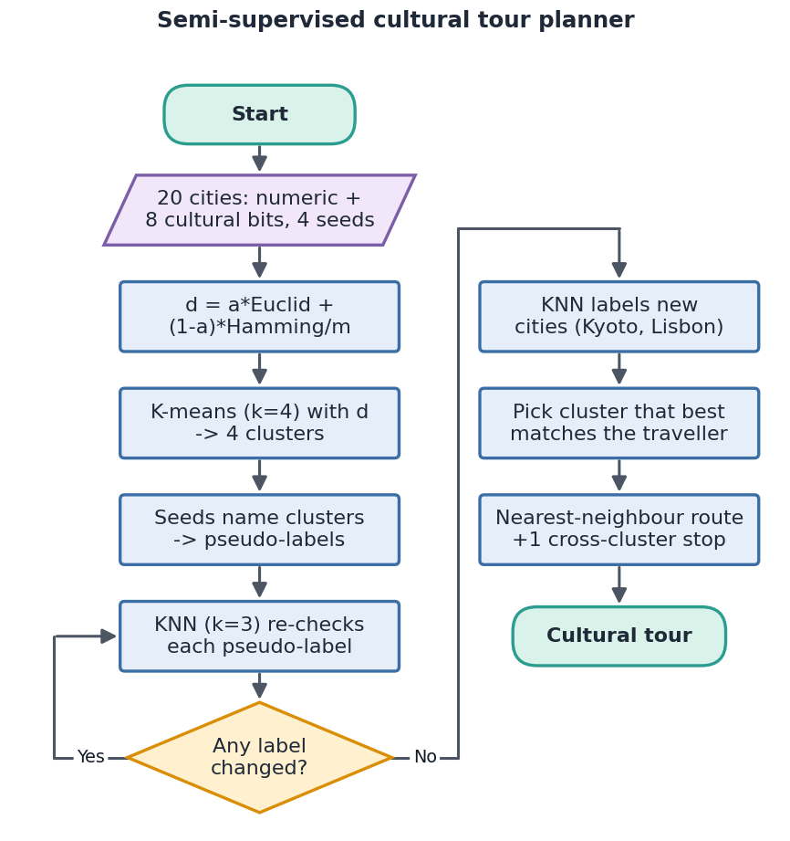
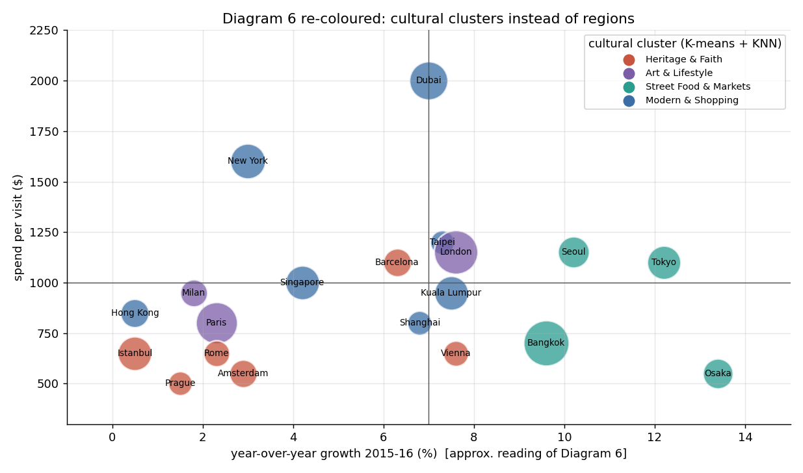
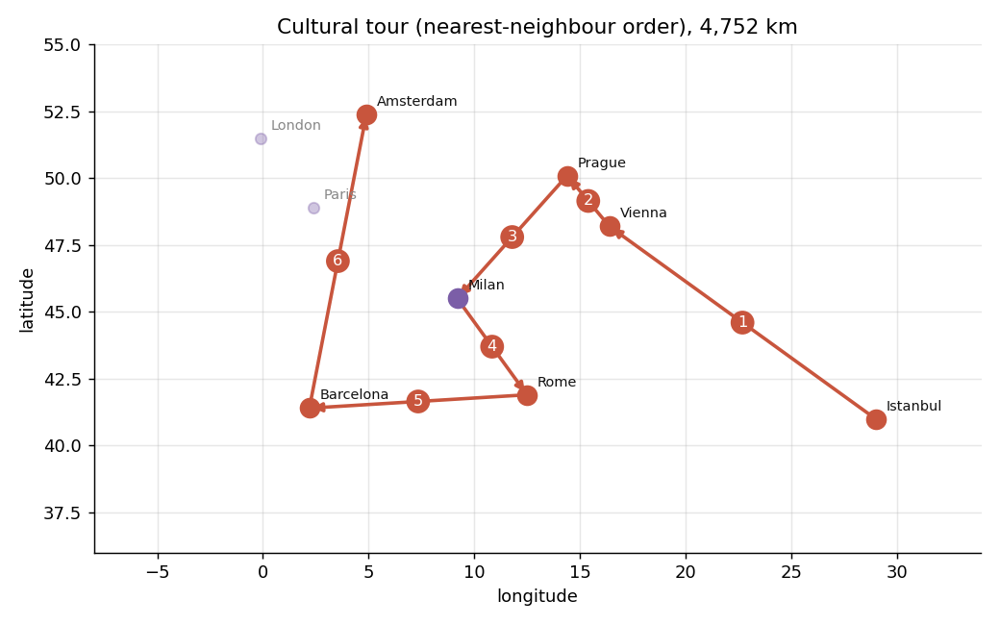
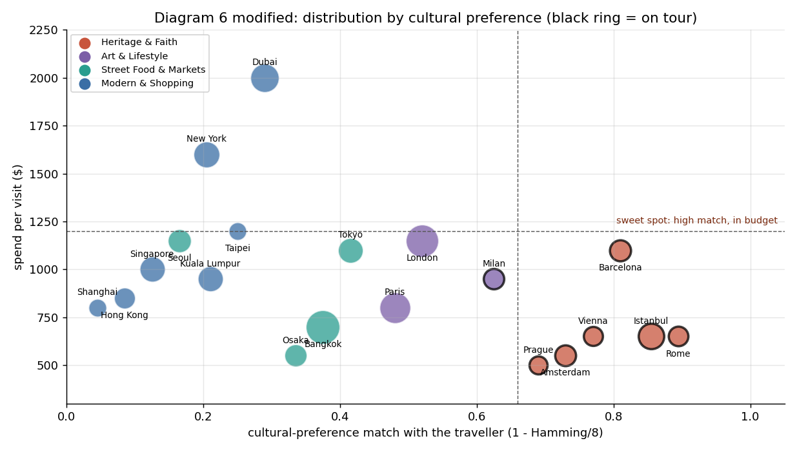
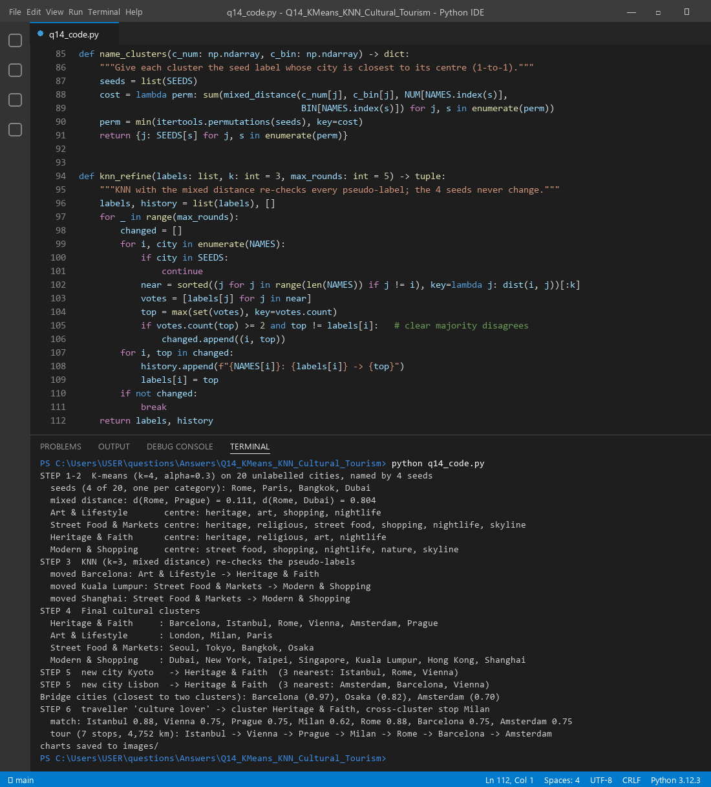

We have many destinations but only a few carry a cultural label. K-means needs no labels: it simply finds natural groups. A handful of labelled seed cities tells us what each group means. KNN then checks every city against its nearest neighbours, fixes doubtful labels and labels brand-new cities. Structure comes from all the data and meaning comes from a few labels. That mix is exactly semi-supervised learning.
| Component | Job in this system |
|---|---|
| K-means (k = 4) | Groups all 20 cities without any labels. Centre = mean for numbers, majority vote for yes/no attributes. |
| 4 seed labels | Name each cluster: the seed closest to a cluster centre gives it its name. |
| KNN (k = 3) | Re-checks each city: if 2 of its 3 nearest cities agree on a different label, the label moves. Also labels new cities. |
| Euclidean distance | Compares the numeric part: growth, spend and visits (min-max normalised). |
| Hamming distance | Compares the cultural part: how many of the 8 yes/no attributes differ. |
| Tour planner | Picks the cluster that best fits the traveller, then orders the stops by nearest neighbour. |
Numbers and yes/no facts cannot share one ruler, so we measure each with its own ruler and blend them:
d(a, b) = α · Euclid(numerica, numericb) / √3 + (1 − α) · Hamming(bitsa, bitsb) / 8
Both parts are scaled to 0–1. We use α = 0.3, so culture carries 70% of the weight because this is a cultural tour. Real values from the run:

function SemiSupervisedClusters(cities, seeds, k = 4, α = 0.3):
d(a, b) = α·Euclid(num_a, num_b)/√3 + (1−α)·Hamming(bits_a, bits_b)/8
clusters ← KMeans(cities, k, distance d) # centre: mean of numbers, majority of bits
name each cluster by the seed city closest to its centre
label(c) ← name of c's cluster, for every city # pseudo-labels
repeat
for each city c that is not a seed:
N ← the 3 nearest cities to c under d # KNN
if at least 2 cities in N share a label L ≠ label(c): label(c) ← L
until no label changes
for each new city x: label(x) ← majority label of its 3 nearest cities
return label
function PlanTour(profile, label, budget):
match(c) = 1 − Hamming(profile, bits_c) / 8
C* ← cluster with the highest average match
stops ← cities of C* within budget + best-matching city from another cluster
route ← start at the best match, then always go to the nearest unvisited stop
return route
Here is what the real run did with only 4 labels:
| Cluster (named by its seed) | K-means centre (attributes switched on) | Final members after KNN |
|---|---|---|
| Heritage & Faith (Rome) | heritage, religious, art, nightlife | Barcelona, Istanbul, Rome, Vienna, Amsterdam, Prague |
| Art & Lifestyle (Paris) | heritage, art, shopping, nightlife | London, Milan, Paris |
| Street Food & Markets (Bangkok) | heritage, religious, street food, shopping, nightlife, skyline | Seoul, Tokyo, Bangkok, Osaka |
| Modern & Shopping (Dubai) | street food, shopping, nightlife, nature, skyline | Dubai, New York, Taipei, Singapore, Kuala Lumpur, Hong Kong, Shanghai |
KNN moved 3 borderline cities: Barcelona (Art → Heritage), Kuala Lumpur and Shanghai (Street Food → Modern). It also labelled two cities that were never in the data: Kyoto (nearest: Istanbul, Rome, Vienna) and Lisbon (nearest: Amsterdam, Barcelona, Vienna). Both went to Heritage & Faith. K-means gives the shape, the seeds give the meaning, and KNN gives the fine-tuning and the reach to new data.

For the culture lover, Heritage & Faith has the best average match. The real run gives:
Nearest-neighbour routing is greedy. The jump from Rome to Barcelona and then up to Amsterdam shows it is quick, not perfect. A 2-opt swap or the traveller's own edits can polish the order.

Systemic creativity means looking at the whole tourism system, not one city at a time. The links between parts are where new tour ideas come from:
The original chart places cities by growth vs spend and colours them by continent. Our version keeps spend on the y-axis and bubble size = visits. The x-axis becomes cultural match with the traveller, and the colour becomes the cultural cluster. The dashed lines (match 0.66, budget $1,200) mark a "sweet spot". The tour cities (black rings) sit at the bottom right, and Milan sits just outside as the planned cross-cluster stop.

q14_code.py does the mixed-distance K-means, seed naming, KNN refinement, new-city labelling, bridge detection
and tour planning, and draws every chart above.

Files in this folder: q14_code.py (source), q14_code.ipynb (Colab/Jupyter version, already run),
q14_output.txt (console output), images/ (all figures).